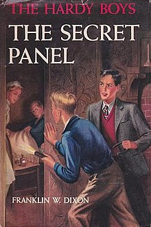
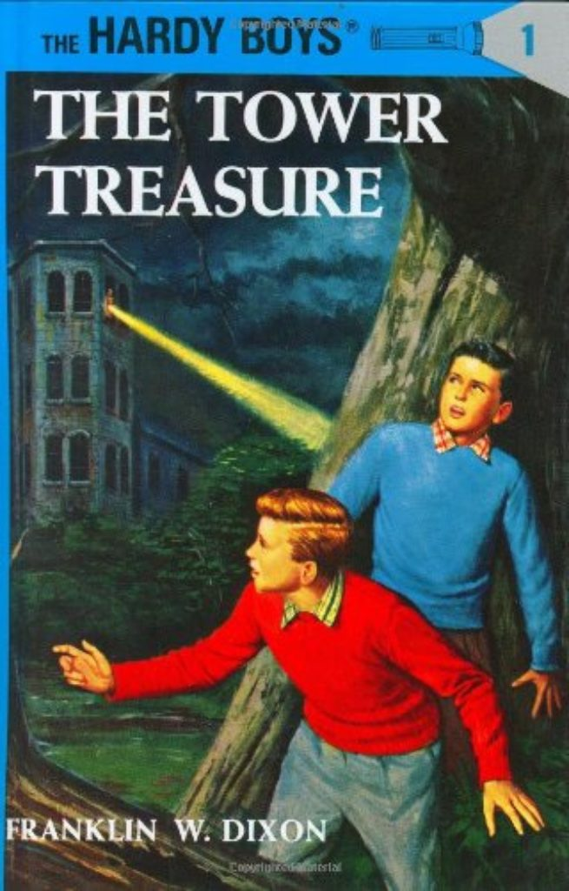
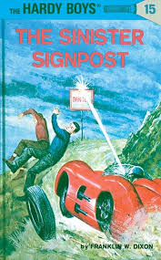
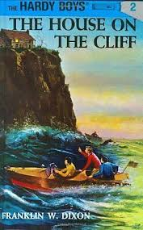
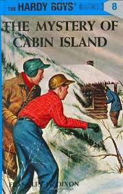

Another exciting mystery begins for Frank and Joe Hardy when they help a stranger who has had an accident with his
car. The man introduces himself as John Mead, owner of a nearby estate. After he continues on his way, Frank finds
an odd-looking house key which belongs to Mead. But when the Hardys try to return it, they learn that John Mead
died five years ago! They are even more amazed when they find that the intricately carved doors in the dead man's
mansion have no visible knobs or keylocks.
While working on this mystery, the boys assist their detective father in tracking down a highly organized ring of
thieves who are robbing warehouses of television and stereo equipment. What happens when Frank and Joe discover that
there is a link between Mr. Hardy's case and the mysterious Mead mansion will keep the reader on the edge with thrills
and suspense. A house with no visible locks, and a man who is supposed to have died showing up looking very much
alive. Add some crooks who decide to make the lockless house their hangout, and you’ve got trouble, right here
in Bayport city.

Tower Mansion has been robbed of forty thousand dollars in securities and jewels and Hurd Applegate, the crotchety
old owner of the mansion, feels confident that Henry Robinson, his caretaker, is responsible. Henry, however, is the
father of one of Frank and Joe Hardy's closest school chums and they are convinced of his innocence. Their father
Fenton has taken on the case and they follow him all the way to New York to uncover the real crook, John (Red) Jackley.
The story begins with Frank and Joe Hardy barely avoiding being hit by a speeding driver, who they notice has bright
red hair. Later, this same red-haired driver attempts a ferry boat ticket office robbery and successfully steals a
yellow jalopy called Queen from the Hardys' friend, Chet Morton. It is learned that the thief returned to Chet's home to steal a tire,
helping Frank and Joe to find Queen abandoned in a public wooded area...
In some ways this is primitive proto-Hardy Boys, in other ways Mr. McFarlane set in motion the complete package right
from the start. Either way, this is basic Hardy Boys, but the foundation is laid.
The classic suspenseful moment to end each chapter is not quite in place yet – some of the chapter endings are hardly
enough to raise an eyebrow in concern – but that approach is being attempted.

In one of the most dangerous and intriguing cases of their careers, Frank and Joe Hardy help their father investigate
a series of mysterious car accidents. Each of the drivers had seen a signpost marked DANGER shortly before his accident.
The young detectives investigate, only to discover that the signposts have vanished. The attempted theft of a secret
experimental motor and the kidnapping of a famous race horse are part of this thrilling case, which proves to be as
sinister as the signposts themselves.
This story begins with Frank and Joe Hardy driving home along Shore Road when they have an accident with a dragster.
After they arrive home their father, Fenton Hardy, tells them about a new case he has taken on for Alden Automotive
Research and Development Company, with which he would like the boys' help...
From its top-notch cover, to its Bayport setting, and lots of flights by Jack Wayne who never seems to mind being
asked to do anything, this one has a lot going for it. A good mystery that needs to be solved, subplots that tie
into the main plot, twins, car racing, it’s fun.

Frank and Joe Hardy are investigating a mysterious old house high on the cliffs above Barmet Bay when they are
frightened off by a scream. The boys return to the apparently haunted house when they make a connection between the
place and a smuggling case their father is working on. When their father goes missing, they have to investigate
confront the smugglers.
Fenton Hardy, the famous private detective and father of the Hardy Boys, asks his sons to help him with his latest
case involving a criminal named Felix Snattman and the illegal drug trade smuggling of stolen drugs. Hardy directs
Frank and Joe to a house on the cliff, whose location overlooking Barmet Bay offers an excellent vantage point to
watch for smugglers.
This is where the Hardy Boys really get going. Fenton gets kidnapped and is out of the picture for half of the book,
so it’s Frank and Joe’s time to shine, and shine they do. They use clues to figure out where the hiding place is, and
where their father is prisoner, and then they show great courage to rescue him. Chet and Biff get to help by going for
the Coast Guard, and this division of labor is a standard part of Hardy Boys plots. McFarlane wrote a good story that,
though aimed at kids, is fairly sophisticated about crime and law enforcement.

After the Hardys crack a car theft ring in The Shore Road Mystery, Elroy Jefferson, "a wealthy resident of Bayport",
offers them the use of his private retreat on Cabin Island. He also promises them another mystery to solve but in the
event provides two: the Hardys must locate the whereabouts of a missing collection of highly valuable medals and also
find the wealthy old man's grandson, Johnny, who has gone missing from school. Holidaying on Cabin island with pals Chet
Morton and Biff Hooper, the boys are repeatedly harangued by shady Mr. Hanleigh who is simply paying their cabin too
much attention!
As the boys try to enjoy themselves, someone seems determined to spoil their fun. First, two high school dropouts
vandalize their loaded ice boat, the Sea Gull, which delays their departure for Cabin Island by a few hours. Once
on the island, a ghost-like hooting leads to an innocent and humorous discovery...
Not much threat of violence in this one as there are no gangs with guns, merely folks searching for a treasure on
the island, and some local teens who are up to mischief. So unlike most of the books, no vast criminal rings are
being rounded up in Bayport. Maybe the crooks took Christmas off. This is a more peaceful Hardy Boys book as a
result.